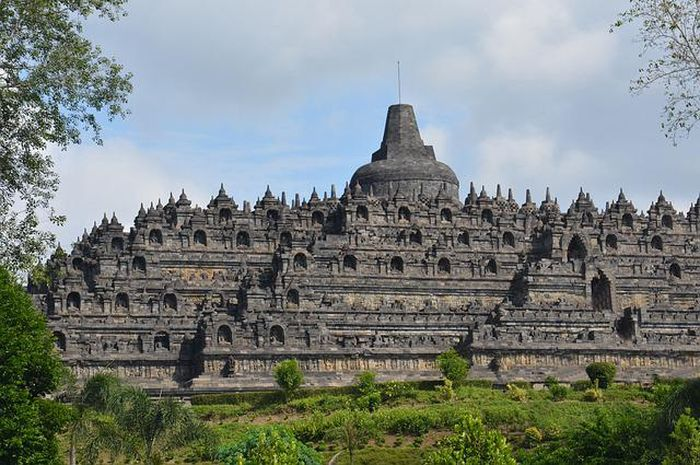
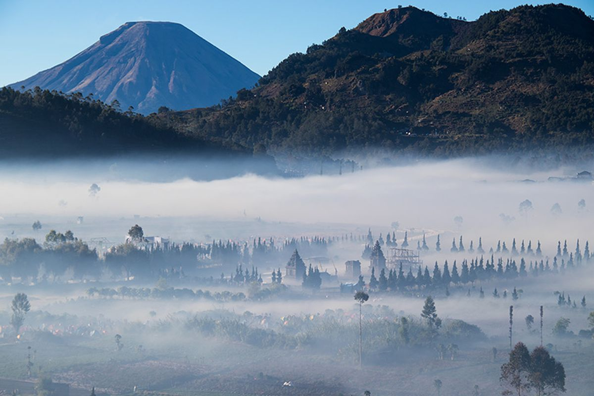
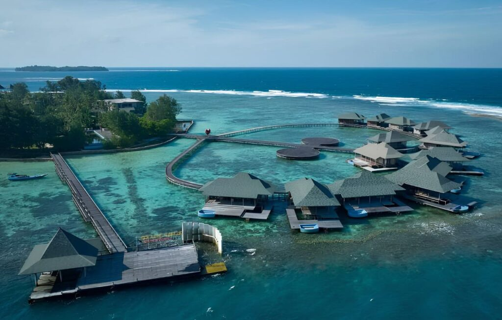
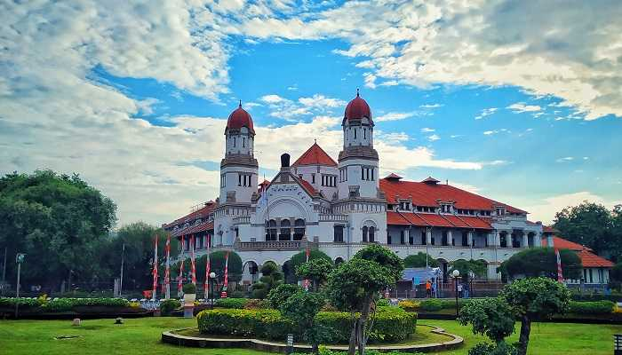
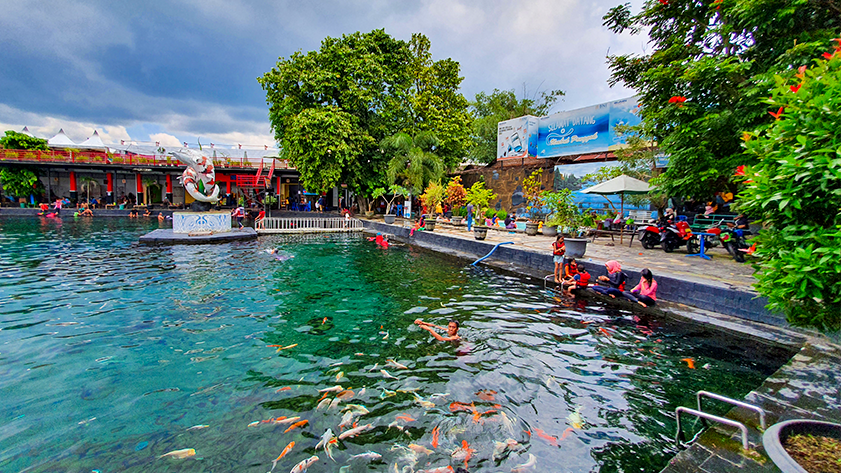
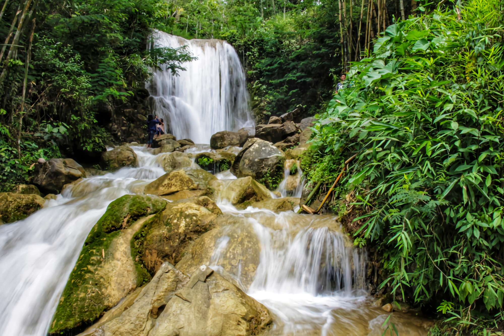
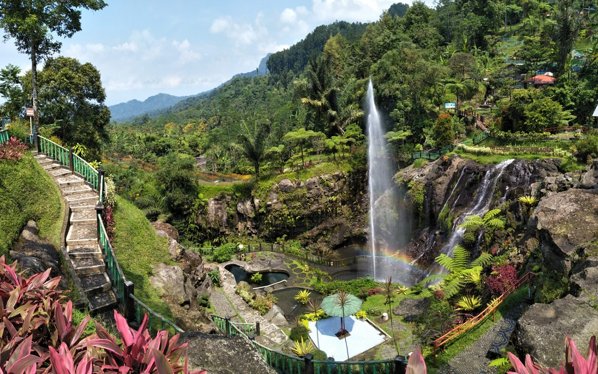
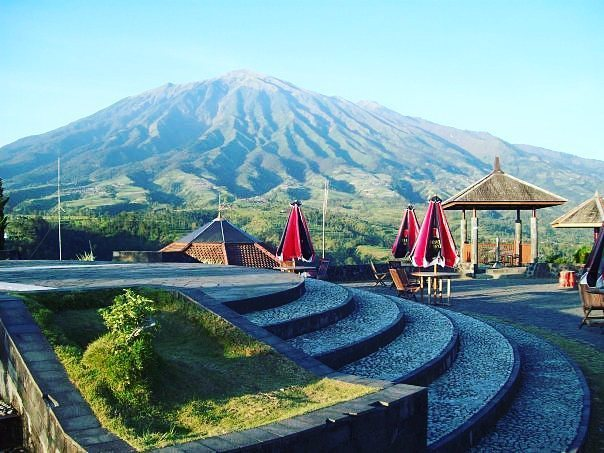
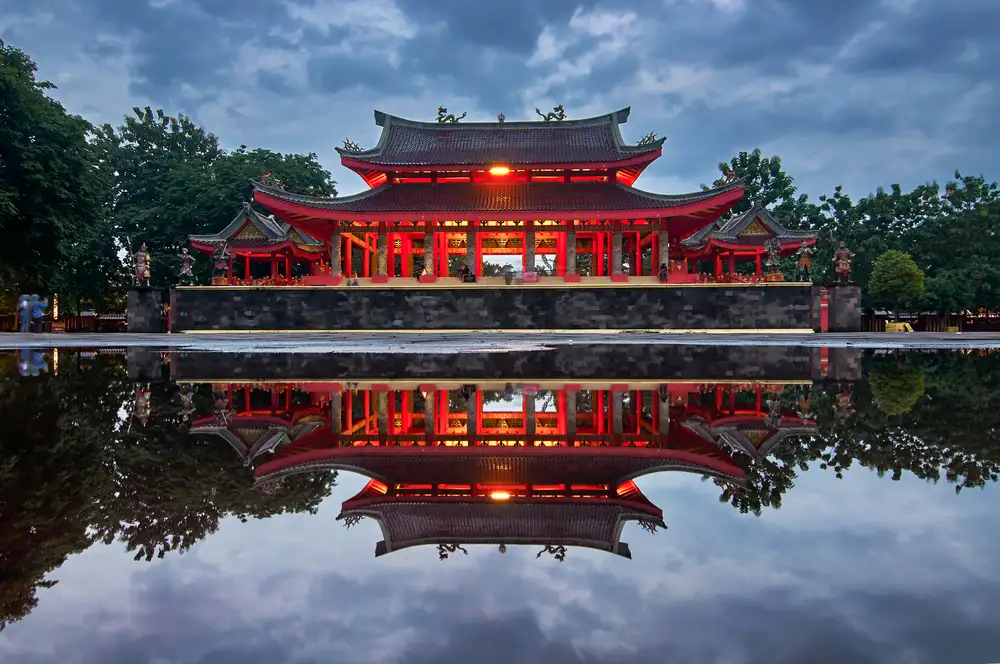

Candi Borobudur
Magelang
Candi Buddha terbesar di dunia dengan ribuan relief yang indah. Menjadi salah satu Situs Warisan Dunia UNESCO.
Google MapsNikmati keindahan alam, budaya dan sejarah Provinsi Jawa Tengah.
Jelajahi Sekarang
Magelang
Candi Buddha terbesar di dunia dengan ribuan relief yang indah. Menjadi salah satu Situs Warisan Dunia UNESCO.
Google Maps
Wonosobo
Dataran tinggi dengan udara dingin, Telaga Warna, Kawah Sikidang, serta pemandangan sunrise yang sangat indah.
Google Maps
Jepara
Kepulauan eksotis dengan pasir putih, air laut jernih, snorkeling, diving, dan sunset terbaik.
Google Maps
Semarang
Bangunan peninggalan Belanda dengan arsitektur klasik yang sangat terkenal.
Google Maps
Klaten
Kolam alami dengan air yang sangat jernih. Tempat favorit untuk foto bawah air.
Google Maps
Semarang
Bekas area pertambangan yang berubah menjadi tebing-tebing eksotis menyerupai Grand Canyon. Tempat ini sangat populer sebagai lokasi fotografi.
Google Maps
Karanganyar
Air terjun setinggi sekitar 80 meter yang berada di lereng Gunung Lawu dengan udara yang sangat sejuk dan panorama hutan yang masih alami.
Google Maps
Banyumas
Objek wisata di kaki Gunung Slamet yang memiliki pemandian air panas, air terjun, serta taman wisata keluarga.
Google Maps
Magelang
Tempat terbaik menikmati panorama Gunung Merapi dan Gunung Merbabu dilengkapi gardu pandang dan museum vulkanologi.
Google Maps
Semarang
Klenteng bersejarah peninggalan Laksamana Cheng Ho dengan arsitektur Tionghoa yang sangat megah dan indah.
Google Maps